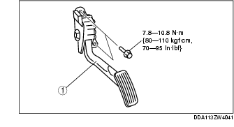

Accelerator pedal removal/installation [ZY] 1. Disconnect the negative battery cable. 2. Disconnect the APP sensor connector. 3. Remove in the order indicated in the table. 1 Accelerator pedal 4. Install in the reverse order of removal.